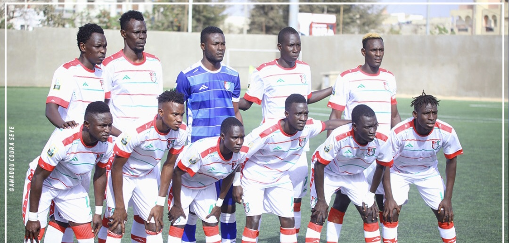
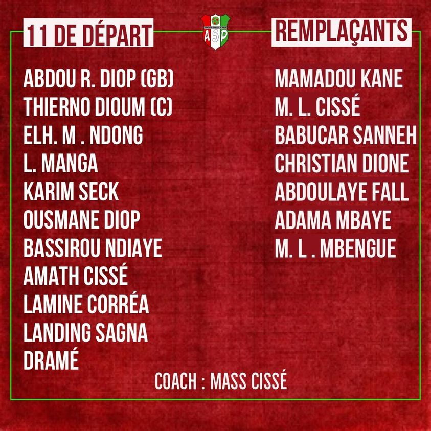

SENEGAL
Acceuil
Equipe Pro
Club
Historique
Galerie
Contact
Equipe

Classement

LES ACTUALITES QUE VOUS AVEZ MANQUEES
As-Douane
As-pikine
jaraff
casa-sport
Cneps-Thies
Dakar-sacre-coeur
Diambar
Fénération-foot
GFC
Linguère
Mbour-Petite-cote
Ndiambour
TFC
Us-Gorée

 As-Douane
As-Douane As-pikine
As-pikine jaraff
jaraff casa-sport
casa-sport Cneps-Thies
Cneps-Thies Dakar-sacre-coeur
Dakar-sacre-coeur Diambar
Diambar Fénération-foot
Fénération-foot GFC
GFC Linguère
Linguère Mbour-Petite-cote
Mbour-Petite-cote Ndiambour
Ndiambour TFC
TFC Us-Gorée
Us-Gorée